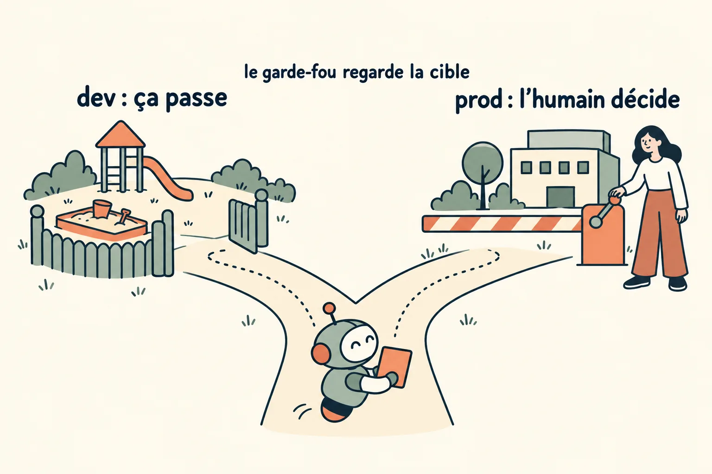
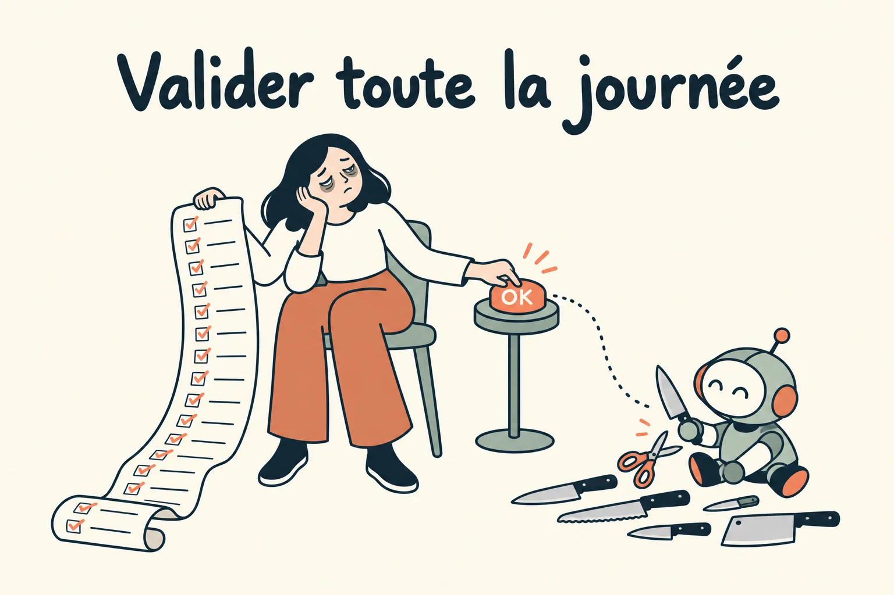
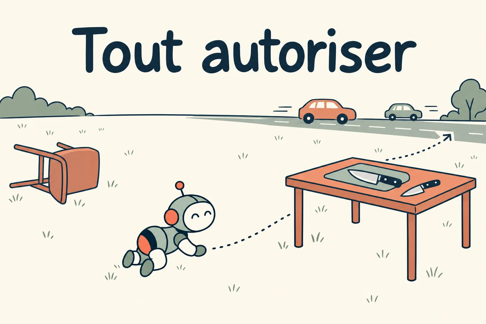
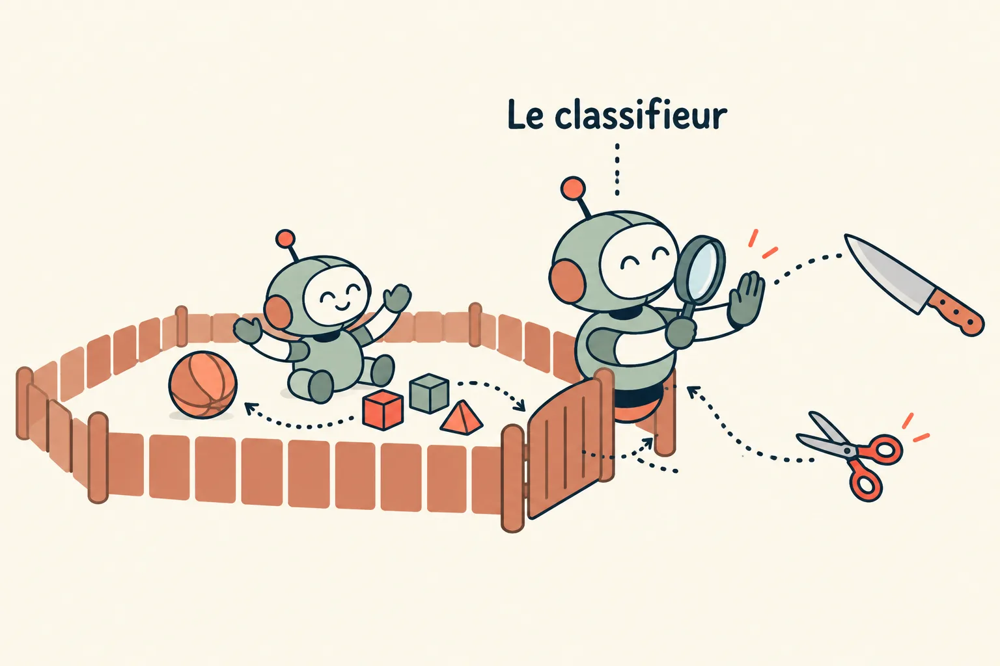
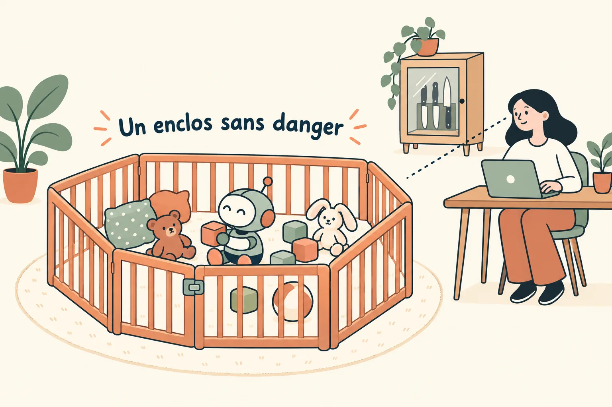

Garde-fous et identités
Une compétence dit comment l'agent fait les choses, quelle que soit l'intention. Un garde-fou dit ce qu'il ne fera jamais, même convaincu d'avoir raison. Pour cela, on regarde la cible réelle d'une commande plutôt que sa forme, et on rend la main à un humain pour tout ce qui écrit en production.
Ce qu'aucune intention ne justifie
Les compétences (module 3) sont les mêmes quelle que soit la demande, et le harnais (module 4) aide l'agent à bien les appliquer. Les garde-fous sont eux aussi les mêmes pour toutes les demandes, mais dans l'autre sens : ils disent ce que l'agent ne fera jamais, quelle que soit l'intention, même bien expliquée, même urgente.
Pour tout le reste, on explique l'intention plutôt que d'empiler les interdits : une intention bien expliquée couvre aussi les cas qu'on n'avait pas prévus (module 3). Les règles absolues sont réservées à ce qu'on ne peut pas défaire : écrire en production, détruire du travail, se servir d'un accès admin. Elles lisent la cible de la commande, parce qu'un agent sait toujours rendre son intention convaincante.

Des garde-fous qui regardent la cible
Les listes d'interdiction par motif (« refuser toute commande qui commence par tel mot ») ne distinguent pas une suppression dans un répertoire de travail jetable d'une suppression dans le dossier personnel, ni un stockage de dev d'un stockage de prod. Elles finissent soit trop larges (l'agent est bloqué 100 fois par jour), soit trop étroites.
- Analysez la commande et résolvez sa cible : chemin réel, compte, environnement. Laissez passer ce qui touche le jetable, refusez le reste.
- Un refus dit quelle forme serait acceptée. L'agent se corrige au lieu de chercher un contournement.
- Le garde-fou a ses propres tests, comme n'importe quel code de sécurité.
- Placez le contrôle là où la commande s'exécute. Lire le texte d'une commande échoue sur les redirections, les scripts et les variables. Une première version qui lisait ce texte refusait des commandes sans danger et laissait passer celles qui passaient par un script : pour les 2 commandes git qui jettent du travail, un wrapper lit désormais les arguments de git au moment où git les reçoit, et n'accepte que les espaces de travail jetables.
Un hook en Python déclenché avant chaque commande de l'agent, guard-bash, remplace les règles deny de Claude Code pour rm récursif, les copies S3 et les lectures de secrets. Il accepte un rm -rf dans l'espace de travail de la tâche, une copie vers un bucket de dev, une lecture de secret de dev.
La prod : lire librement, écrire jamais
| Règle | Pourquoi |
|---|---|
| Lectures prod libres : logs, exécutions, alarmes, requêtes en lecture seule. | Faire valider chaque lecture par un humain tue la boucle de diagnostic. |
| Écritures prod remises à l'humain : l'agent affiche la commande exacte, l'humain la lance, la sortie revient dans la session. | Un accord donné une fois ne doit pas devenir une autorisation permanente. |
| Pas de contournement après un refus : ni sous-shell, ni wrapper, ni variable d'environnement. | Un agent motivé trouve toujours une reformulation, donc la règle doit l'interdire noir sur blanc. |
| Vérifier le compte avant d'agir : toute commande d'infra refuse de continuer si elle se résout vers un autre compte que celui attendu. | Des identifiants qui traînent dans l'environnement priment souvent sur le profil choisi. |
Le préfixe ! de Claude Code exécute dans la session une commande tapée par l'humain : c'est le canal de remise. Côté infra, un compte AWS de dev séparé de la prod par des SCP, et un wrapper de lecture prod qui assume un rôle limité aux logs et aux exécutions.
Une identité par agent, aux droits minimaux
- Jamais les identifiants d'une personne. L'agent a son propre rôle : tout ce qu'il fait est tracé sous ce rôle, et le révoquer coupe tout d'un coup.
- Une identité de bot sur la forge, limitée aux PR d'un seul dépôt. Elle ne peut pas approuver sa propre PR : la revue et la CI s'appliquent comme pour un humain.
- Un environnement jetable par session : la machine sert de bac à sable, et le « commit et push avant de partir » évite de perdre le travail avec elle.
Sur le poste : le quotidien d'un côté, l'admin de l'autre
Un agent local hérite de tout ce que le shell du développeur peut atteindre : un jeton admin resté dans un trousseau, une variable exportée, un compte aux pleins droits. Il faut donc limiter par construction ce que l'agent peut trouver seul, et exiger un geste humain à chaque usage d'un accès admin.
- Des identifiants du quotidien aux droits minimaux : les seuls dépôts et opérations nécessaires, une expiration. L'ancien jeton admin est retiré du trousseau, pour que l'agent ne retombe pas dessus.
- Les identifiants admin chiffrés, déverrouillés par biométrie à chaque utilisation, et injectés pour la durée d'une seule commande. Ils ne sont ni écrits dans un fichier d'environnement, ni exportés, ni stockés en clair.
- La branche principale protégée côté forge reste la barrière de fond : un jeton restreint ne limite pas ce que git fait par une autre voie.
Pour gh, un fine-grained PAT rattaché à l'organisation : lecture des Actions et des statuts, écriture sur le contenu, les issues et les PR, aucun accès à l'administration, aux secrets, aux variables ni aux webhooks. Il est rangé dans le trousseau macOS, et git reste en SSH. Les accès admin passent par des wrappers (gh-admin, scalingo-admin) qui déchiffrent le secret avec une clé age gardée dans le Secure Enclave, derrière Touch ID.
Surveiller ou clôturer
Claude Code propose plusieurs façons de laisser agir un agent. Voici les 3 principales, de la plus dangereuse à la moins dangereuse à notre avis, puis ce qui les rend toutes plus sûres.
1. Le mode manuel, ou le babysitting
En mode manuel, l'agent demande l'autorisation avant chaque commande, et le développeur valide toutes ses décisions : entre 100 et 500 par jour à notre échelle. C'est du micro-management, aliénant, et dangereux justement parce qu'il rassure. Au bout de la centième demande, la vigilance s'use, et la commande dangereuse passe avec les autres. Anthropic l'a mesuré sur ses propres utilisateurs : ils acceptent 93 % des demandes d'autorisation.
C'est un babysitter qui laisserait un bébé jouer avec des couteaux toute la journée, en comptant sur ses réflexes pour l'arrêter au moment où il fait une bêtise.

2. Tout autoriser
L'option --dangerously-skip-permissions retire toutes les demandes. Elle ne protège de rien, et son nom le dit. Elle a un seul avantage sur le mode manuel : personne ne croit surveiller. Hors d'un enclos (étape 4), c'est le bébé seul avec les couteaux.

3. Le mode auto, ou le classifieur
Le mode auto remplace la plupart des demandes par un classifieur : un modèle qui lit chaque action avant qu'elle s'exécute et bloque celles qui lui semblent risquées. Les lectures et les modifications de fichiers du projet passent sans lui. Il se règle à partir des paramètres de permissions : l'environnement de confiance, les règles de blocage, les exceptions autorisées. Mais il infère plutôt qu'il ne vérifie, et Anthropic publie ses propres chiffres : sur 52 actions trop zélées observées en conditions réelles, il en a laissé passer 17 %. C'est mieux qu'un humain fatigué, ce n'est pas une barrière.

deny du fichier settings.json interdisent une commande, pas une action. Un agent à qui l'on refuse une commande peut atteindre le même résultat par une autre voie : nous avons déjà obtenu d'un agent qu'il fasse, par un SDK, une action dont la commande était bloquée par une règle deny à joker. Le mode auto rouspète dans ce cas, mais il l'a déjà laissé faire. Ces règles sont un ralentisseur. La barrière, c'est une identité qui n'a pas le droit de faire l'action, quelle que soit la voie.4. Un enclos sans danger
Surveiller, c'est bien ; donner un enclos sans danger, c'est mieux. Un enclos sans danger, c'est un environnement isolé, où l'agent n'a que les droits dont sa tâche a besoin : une identité propre, la prod en lecture seule, une machine jetable. À l'intérieur, l'agent peut tout essayer, puisque rien de grave n'est à sa portée. La surveillance, humaine ou automatique, devient une protection de plus, et cesse d'être la seule.

Chez nous, le classifieur du mode auto s'ajoute à guard-bash et à la remise des écritures prod à l'humain, il ne les remplace pas. Les demandes d'autorisation qui restent sont comptées : elles disent où l'enclos est encore trop étroit.
À reprendre
- Remplacez les listes d'interdiction par un contrôle qui résout la cible.
- Prod en lecture pour l'agent, écritures remises à l'humain avec la commande exacte.
- Une identité propre à l'agent, révocable d'un geste.
- Vérifiez le compte avant toute commande d'infra.
- Sur le poste, des jetons minimaux pour l'agent, l'admin derrière un geste humain à chaque usage.
- Ne comptez pas sur la vigilance d'un humain qui valide tout : donnez à l'agent un enclos isolé, aux droits minimaux, et surveillez en plus.